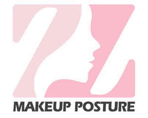

Trade Mark Journal No.2025/019 9 May 2025
UK00004193424 23 April 2025 (3,6,8,10,11,14,16,18,20,21,24,25,26,35,44)

- Class 3
- Beauty serums; Beauty creams; Beauty lotions; Beauty care cosmetics; Beauty masks; Masks (Beauty -); Beauty soap; Beauty milk; Beauty gels; Beauty milks; Beauty creams for body care; Facial beauty masks; Beauty balm creams; Beauty preparations for the hair; Beauty care preparations; Distilled oils for beauty care; Beauty tonics for application to the face; Beauty masks for hands; Beauty serums with anti-ageing properties; Beauty tonics for application to the body; Natural cosmetics; Body cleaning and beauty care preparations; Non-medicated beauty preparations; Natural makeup; Skincare cosmetics; Natural perfumery; Body care cosmetics; Body and facial creams [cosmetics]; Hair cosmetics; Cosmetics; Skin care cosmetics; Colour cosmetics; Facial creams [cosmetics]; Colour cosmetics for the skin; Hair care creams [for cosmetic use]; Anti-aging moisturizers used as cosmetics; Colour cosmetics for the eyes; Cosmetic products in the form of aerosols for skincare; Body creams [cosmetics]; Cosmetics for eye-lashes; Natural oils for cosmetic purposes; Hair care lotions [for cosmetic use]; Organic cosmetics; Facial makeup; Cosmetics for suntanning; Cosmetic products in the form of aerosols for skin care; Eye cosmetics; Decorative cosmetics; False nails; Nails (False -); Artificial nails; Adhesives for false eyelashes, hair and nails; False fingernails; Adhesives for artificial nails; Nail paint [cosmetics]; Artificial nails for cosmetic purposes; Nail glitter; Lotions for strengthening the nails; Nail cosmetics; Nail polish pens; Nail polish; False hair (Adhesives for affixing -); Nail hardeners [cosmetics]; Artificial fingernails of precious metal; Nail makeup; Preparations for removing gel nails; Varnish (Nail -); Nail polish removers [cosmetics]; Adhesives for affixing false eyelashes; Nail enamel; Adhesives for affixing false eyebrows; Nail polish remover pens; Nail whiteners; Nail hardeners; Nail polish removers; Hair masks; Skin masks [cosmetics]; Cosmetics for the use on the hair; Hair shampoos; Hair rinses; Hair pomades; Hair shampoo; Hair sprays; Hair texturizers; Hair styling gels; Styling gels for the hair; Hair gel; Hair mascara; Styling sprays for the hair; Hair styling gel; Hair wax; Hair lighteners; Hair relaxers; Hair styling lotions; Hair dye; Hair mousses; Hair serums; Styling paste for hair; Dyes for the hair; Hair dyes; Hair oils; Hair conditioner; Hair creams; Hair bleaches; Hair moisturizers; Hair lotion; Hair bleach; Hair conditioners; Hair balms; Hair conditioner bars; Wax strips for removing body hair; Hair oil; Beard oil; Oil baths for hair care; Facial oil; Hair spray; Cuticle oil; Hair liquid; Hair liquids; Bath oil; Baby oil; Hair balm; Baby hair conditioner; Oils for hair conditioning; Hair lotions; Hair cream; Body oil [for cosmetic use]; Nail strengtheners; Nail gel; Nail varnish; Eyelash tint; Eyelash dye; Eyelashes; Eyebrow mascara; Artificial eyelashes; Eyebrow gel; Eyelid doubling makeup; Long lash mascaras; Cosmetic preparations for eye lashes; Eyebrow cosmetics; Adhesives for affixing artificial eyelashes; Eye makeup remover; Cosmetic preparations for eyelashes; Cosmetic skin enhancers; Nail base coat [cosmetics]; Eye make-up removers; Gel nail removers; Nail primer [cosmetics]; Cosmetic hair lotions; Eyebrow powder; Eye makeup; Nail varnish remover [cosmetics]; Cosmetic eye gels; Nail enamel remover; Eyebrow styling wax; Make-up remover; Cotton wool buds for cosmetic use; Eye wrinkle lotions; Aloe vera gel for cosmetic purposes; Eye lotions; Cotton wool balls for cosmetic use; Eyeliner; Eye make-up; Eyelid pencils; Hair mousse; Hair removal and shaving preparations; Hair grooming preparations; Pre-shave gels; Pre-shave foams; Depilatory creams; Lotions for beards; After-shave creams; Eye pencils; Eye creams; Eye liner; Cosmetic eye pencils; Cosmetics in the form of eye shadow; Eyes make-up; Eye make up remover; Gel eye patches for cosmetic purposes; Facial concealer; Lip makeup; Cosmetic pencils for cheeks; Cosmetics for eye-brows; Make-up for the face; Eyebrow colors in the form of pencils and powders; Creams (Non-medicated -) for the eyes; Eye care products, non-medicated; Facial cream [for cosmetic use]; Make-up for the face and body; Facial cream; Face powder [for cosmetic use]; Face and body glitter; Hand masks for skin care; Foot smoothing stones; Foot scrubs; Foot deodorant spray; Foot powder [non-medicated]; Non-medicated foot soaks; Foot masks for skin care; Soap for foot perspiration; Non-medicated foot cream; Exfoliating scrubs for the feet; Makeup; Make-up; Make-up primer; Make-up powder; Make-up removers; Make-up pencils; Makeup setting sprays; Skin make-up; Chalk for make-up; Make-up primers; Foundation make-up; Make-up foundation; Cleaner for cosmetic brushes; Theatrical makeup; Make-up foundations; Make-up palettes containing cosmetics; Organic makeup; Make-up removing lotions; Make-up for compacts; Make-up base; Make-up removing creams; Make-up kits; Mascara; Make-up removing gels; Room perfumes in spray form; Hair and body wash; Hair styling spray; Shower gel; Hair moisturisers; Shower and bath foam; Bath and shower foam; Hair care lotions; Mousses [toiletries] for use in styling the hair; Hair gels; Hair removing cream; Hair rinses [for cosmetic use]; Wax treatments for the hair; Shower creams; Hair powder; Bath and shower gels; Hair color; Hair lacquer; Hair colouring; Hair protection creams; Gels for fixing hair; Shower gels; Bath and shower oils [non-medicated]; Shampoos for human hair; Perfume; Perfumes; Perfume oils; Perfumery and fragrances; Amber [perfume]; Fragrances; Oils for perfumes and scents; Fragrance sachets; Musk [perfumery]; Cologne; Perfume water; Aromatics for perfumes; Room perfume sprays; Liquid perfumes; Colognes; Scents; Fragrance emitting wicks for room fragrance; Aromatics for fragrances; Perfumery; Cedarwood perfumery; Extracts of perfumes; Deodorants for personal use [perfumery]; Aftershave lotions; Body fragrances; Perfumeries; Fragrance preparations; Fragrances for automobiles; Perfumed potpourris; Vanilla perfumery; Household fragrances; Fragrance sachets for eye pillows; Natural oils for perfumes; Room fragrances; Perfumery products; Mint for perfumery; Perfumed soaps; Feminine deodorant sprays; Cologne water; Scented water for fragrancing; Solid perfumes; After-shave lotions; Air fragrance preparations; Perfumed soap; Aftershave balms; Scented linen sprays; Moisturisers [cosmetics]; Cosmetics and cosmetic preparations; Skin fresheners [cosmetics]; Cosmetics preparations; Cosmetics in the form of creams; Cosmetics for use on the skin; Cosmetic moisturisers; Sunscreens [for cosmetic use]; Cosmetic creams and lotions; Bath powder [cosmetics]; Skin recovery creams [cosmetics]; Night creams [cosmetics]; Body gels [cosmetics]; Sun blocking lipsticks [cosmetics]; Sunscreen [for cosmetic use]; Cosmetic soaps; Dyes (Cosmetic -); Cosmetic facial lotions; Facial lotions [cosmetic]; Cosmetics in the form of oils; Skin care lotions [cosmetic]; Tissues impregnated with cosmetics; Sun protecting creams [cosmetics]; Perfumed powders [for cosmetic use]; Liners [cosmetics] for the eyes; Moisturising skin lotions [cosmetic]; Skin creams [cosmetic]; Hair colouring and dyes; Hair colorants; Hair colourants; Beard dyes; Hair dyeing preparations; Hair color removers; Colouring lotions for the hair; Hair colour removers; Colour removers for the hair; Sunscreen lotions; After-sun lotions; Scented body lotions and creams; Moisturising creams, lotions and gels; Sun-tanning lotions; Skin lotions; Cosmetic suntan lotions; Suncare lotions [for cosmetic use]; Moisturizing body lotions; Facial lotions; Cleansing lotions; Body lotions.
- Class 6
- Foot scrapers.
- Class 8
- Hand tools for use in beauty care; Hand-operated hygienic and beauty implements for humans and animals; Dog clippers; Hair clippers; Nail buffers for use in manicure; Nail scissors; Nail clippers; Nail skin treatment trimmers; Manicure and pedicure tools; Fingernail clippers; Hand-operated nail clippers for pets; Nail files; Manicure sets; Hair clippers for babies; Hair cutting scissors; Nail polishers (Electric -); Beard clippers; Nail polishers (Non-electric -); Non-electric hair clippers; Electric hair clippers; Extractors (Nail -); Nail extractors; Nail files, non-electric; Nail files, electric; Electric nail files; Nail buffers; Nail punches; Nail nippers [hand tools]; Nail pullers, hand-operated; Cuticle tweezers; Roller heads for electronic nail files; Nail buffers, electric or non-electric; Tweezers; Hair-removing tweezers; Artificial eyelash tweezers; Cuticle scissors; Scissors; Nail nippers; Curlers (Eyelash -); Eyelash curlers; Electric eyelash curlers; Electric hair crimper; Electric ear hair trimmers; Electric nasal hair trimmers; Hand-operated pineapple eye removers; Nasal hair trimmers; Electric and battery-powered hair clippers; Electric crimping irons for the hair; Pedicure sets; Manicure sets, electric; Electric manicure sets; Electric pedicure sets; Manicure implements; Razor blades; Shaving blades; Scissor blades; Vibrating blade razors; Shaving cases; Razors; Mustache and beard trimmers; Razor strops; Non-electric beard trimmers; Non-electric razors; Beard trimmers; Vibrating blade shavers; Dispensers for razor blades; Blades for electric razors; Disposable razors; Straight razors; Electric beard trimmers; Electric razors; Hand-operated hair clippers; Razor blade dispensers; Foot files.
- Class 10
- Lice combs.
- Class 11
- Hair steamers for use in beauty salons; Hair steamers for beauty salon use; Hair driers for use in beauty salons; Hair drying machines for beauty salon use; Dryers (Hair -); Hair dryers; Driers (Hair -); Hair driers; Towel steamers for hair salons; Shower head sprayers; Shower hoses for hand showers; Shower bath screens (Metal -); Shower bases.
- Class 14
- Natural pearls; Fake jewellery; Ear clips; Clips (Tie -); Scarf clips being jewelry; Clip earrings; Jewellery; Necklaces [jewellery]; Brooches [jewellery]; Jewellery brooches; Jewellery, including imitation jewellery and plastic jewellery; Pendants [jewellery]; Bracelets [jewellery]; Brooches [jewellery, jewelry (Am.)]; Ornaments [jewellery]; Amulets [jewellery]; Amulets being jewellery; Pearls [jewellery]; Trinkets [jewellery]; Necklaces [jewellery, jewelry (Am.)]; Fashion jewellery; Jewelry; Lockets [jewellery]; Gold jewellery; Jade [jewellery]; Brooches [jewelry]; Jewelry brooches; Brooches being jewelry; Clasps for jewellery; Charms [jewellery]; Charms for jewellery; Jewellery charms; Enamelled jewellery; Costume jewellery; Pearls [jewellery, jewelry (Am.)]; Ornaments [jewellery, jewelry (Am.)]; Items of jewellery; Jewellery items; Decorative brooches [jewellery]; Trinkets [jewellery, jewelry (Am.)]; Amulets [jewellery, jewelry (Am.)]; Pewter jewellery; Bracelets [jewellery, jewelry (Am.)]; Cloisonné jewellery [jewelry (Am.)]; Wristlets [jewellery]; Cloisonné jewellery; Shoe jewellery; Precious jewellery; Crucifixes as jewellery.
- Class 16
- Cosmetic pencil sharpeners.
- Class 18
- Beauty cases; Beauty cases [not fitted]; Makeup bags.
- Class 20
- Shaving mirrors.
- Class 21
- Cosmetic, hygiene and beauty care utensils; Nail brushes; Hair brushes; Hair combs; Combs for back-combing hair; Hair for brushes; Electric hair combs; Hair tinting brushes; Wide tooth combs for hair; Large-toothed combs for the hair; Combs for the hair (Large-toothed -); Hair color application bottles; Bottle brushes; Hot air hair brushes; Eyelash combs; Eyebrow brushes; Combs; Shaving brushes; Eyeliner brushes; Lint brushes; Cosmetic spatulas; Holders for shaving brushes; Eyelash brushes; Eyelash Separators; Eye make-up applicators; Mascara brushes; Applicators for cosmetics; Cosmetics applicators; Shaving brushes of badger hair; Shaving bowls; Shaving dishes; Shaving stands; Shaving brush holders; Shaving brush stands; Stands for shaving brushes; Stands for shaving utensils; Cosmetic spatulas for use with depilatory preparations; Facial cleansing brushes, electric and non-electric; Combs (Electric -); Electric combs; Hairbrushes; Mane brushes; Shampoo brushes; Brushes; Foot exfoliating pads; Shoe brushes; Tongue brushes; Toilet brush sets; Tongue cleaning brushes; Lavatory brush stands; Boot brushes; Bath brushes; Bathtub brushes; Exfoliating brushes; Make-up brushes; Cosmetics brushes; Applicator sticks for applying makeup; Skin cleansing brushes; Lip brushes; Cosmetic brushes; Hair color application brushes; Make-up sponges; Applicator sticks for applying make-up; Brushes (except paint brushes); Makeup sponge holders; Dusting brushes; Applicators for applying eye make-up; Electric rotating hair brushes; Empty spray bottles; Bottles; Plastic spray nozzles; Perfume bottles; Soap dispensing bottles; Perfume sprays, sold empty; Perfume bottles sold empty; Scent sprays [atomizers]; Perfume sprayers; Empty water bottles for bicycles; Cleaning brushes for feeding bottles; Nozzles for watering cans; Siphon bottles for carbonated water; Siphon bottles for aerated water; Reusable plastic water bottles sold empty; Perfume sprayers [sold empty].
- Class 24
- Turban towels for drying hair; Make-up pads of textile for removing make-up; Cloths for removing make-up; Shower curtains; Textile hair drying towels; Shower room curtains; Shower curtains of textile or plastic.
- Class 25
- Shower caps; Caps (Shower -).
- Class 26
- Bridal headpieces in the nature of ornamental hair combs; False hair; Hair (False -); Toupees [false hair]; Hair ornaments, hair rollers, hair fastening articles, and false hair; False hair for Japanese hair styling (kamoji); False hairpieces; Sticks for use in decorating the hair; False moustaches; Moustaches (False -); Beards (False -); Hair ornaments in the nature of hair wraps; Oriental hair pins; Hair clips; Hair curl clips; Clam clips for hair; Snap clips [hair accessories]; Claw clips [hair accessories]; Hair barrettes; Hair scrunchies; Hair twisters [hair accessories]; Hair slides; Hair pins; Pins for the hair; Hair elastics; Hair fasteners; Hair ribbons for Japanese hair styling (tegara); Clips for clothing; Hair tassel strings for Japanese hair styling (motoyui); Hair pieces; Bows for the hair; Hair bows; Tresses of hair; Hair (Tresses of -); Hair tresses; Hair buckles; Hair curlers; Hair ribbons; Ribbons for the hair; Plaits of hair; Hair extensions; Ponytail holders and hair ribbons; Hair curling pins; Hair tassel ornaments for Japanese hair styling (negake); Hair rollers; Plaited hair; Hair (Plaited -); Ornamental hair pins for Japanese hair styling (kogai); Sticks for use in styling the hair; Hair weaves; Ornaments (Hair -); Ornaments for the hair; Hair ornaments; Hair bands; Bands for the hair; Bands (Hair -); Hair pins and grips; Waving pins for the hair; Hair wraps; Hair coloring caps; Hair grips [slides]; Twisters [hair accessories]; Elastic for tying hair; Grips for the hair; Hair grips; Hair curling papers; Papers (Hair curling -); Hair netting; Hair colouring caps; Rubber bands for hair; Fibres for use as replacement hair; Synthetic hair; Electric hair curlers; Ornamental combs for Japanese hair styling (marugushi); Hairpieces; Wigs; Synthetic hairpieces.
- Class 35
- Marketing research in the fields of cosmetics, perfumery and beauty products; Retail services in relation to beauty implements for humans; Online retail store services relating to cosmetic and beauty products.
- Class 44
- Beauty salons; Salons (Beauty -); Beauty care; Beauty treatment; Salon services (Beauty -); Beauty salon services; Beauty consultation; Beauty spa services; Beauty counselling; Beauty consultancy; Hygienic and beauty care; Beauty care for animals; Services of a hair and beauty salon; Beauty care of feet; Human hygiene and beauty care; Pet beauty salon services; Beauty care services; Beauty therapy services; Hygienic and beauty care for animals; Beauty treatment services; Facial beauty treatment services; Hygienic and beauty care for humans; Hygienic and beauty care services; Beauty salons for wig cutting; Beauty therapy treatments; Beauty care for human beings; Beauty treatment services especially for eyelashes; Hygienic and beauty care for human beings; Beauty consultation services; Beauty information services; Consultancy in the field of body and beauty care; Beauty advisory services; Beauty consultancy services; Rental of equipment for human hygiene and beauty care; Beauty care services provided by a health spa; Provision of hygienic and beauty care services; Information relating to beauty care; Information relating to beauty; Advisory services relating to beauty care; Consultation services relating to beauty care; Advisory services relating to beauty; Consultancy services relating to beauty; Providing information relating to beauty salon services; Advisory services relating to beauty treatment; Providing information about beauty; Consultancy provided via the Internet in the field of body and beauty care; Rental of machines and apparatus for use in beauty salons or barbers' shops; Cosmetic make-up services; Skin care salons; Hair salon services for women; Cosmetic treatment services for the body, face and hair; Skin care salon services; Hair dressing salon services; Haircare services; Cosmetic treatment for the hair; Personal hair removal services; Hair treatment services; Hair highlighting services; Hair styling; Airbrush tanning salon services; Hair cutting; Shampooing of the hair; Hair braiding services; Hair replacement; Hair treatment; Hair styling services.
Atal habibi